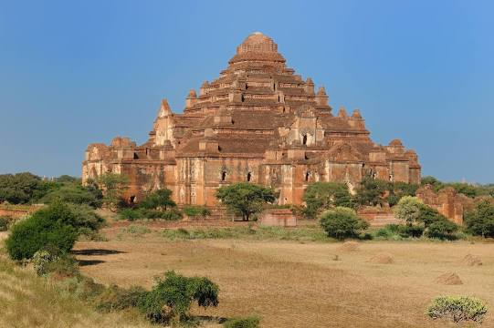

Many Attractions In Myanmar
Most Popular Places

The golden rock Golden Rock, also locally referred to as Kyaiktiyo Zedi is a truly awesome sight. It is a pagoda (zedi) that sits atop a huge rock that appears as if it’s about to fall from the edge of the cliff. The pagoda and rock, both are covered with golf leaf. The locals believe that the rock that is situated 1,100 meters above sea level is held at this place through a miracle of Buddha. Moreover, the pagoda is said to have a strand of Buddha’s hair. It is a pilgrimage for Myanmar Buddhists. Golden Rock is located around a five-hour drive from Yangon and also, includes a long walk. A staircase leads to the pagoda complex that houses various viewing platforms and Buddha shrines.

Ananda Temple is an amazing Buddhist temple that was built in 1105 AD during the supremacy of King Kyanzittha of the Pagan Dynasty. It is one among the four surviving temples of Bagan. The layout of the temple is in a cruciform offering several terraces of a small pagoda with the top enveloped through an umbrella. This Buddhist temple has four standing Buddhas and each one is facing the different directions. Built in a fusion of Mon and Indian style of architecture, the inspiring temple is also named as the “Westminster Abbey of Burma”.
Don't skip these amazings
Pindaya Cave is tucked away in the highlands of the southern region of Shan State, and is an easy jump from the popular Inle Lake.Catch a pickup into the hills, and follow in the footsteps of Buddhist pilgrims who, for hundreds of years, have journeyed from far and wide to visit this incredible cave system that’s filled with over 8,000 Buddha statues. Keep your eyes peeled, as you’ll find statues hidden in every nook and cranny. Perched on precarious looking outcrops of rock, these golden Buddhas follow you with their eyes as you explore Pindaya Cave.
Shwenandaw Monastery is an ancient Buddhist monastery located in the city of Mandalay. Majorly known as the Golden Palace, this edifice is situated in central Myanmar. Originally, it was the part of the Mandalay Palace complex. At once, the entire building was covered with gold but the gold is inside now. The exterior of this monastery is covered with ornate teak carvings representing Buddhist myths. The monastery was built by King Thibaw Min in 1878. It is famous for the teak carvings of Buddhist myths that beautify its walls and roofs.
Dhammayangyi Temple is a Buddhist temple located in Bagan, Myanmar. Largest of all the temples in Bagan, the Dhammayan as it is popularly known was built during the reign of King Narathu. Narathu, who came to the throne by assassinating his father Alaungsithu and his elder brother, presumably built this largest temple to atone for his sins. The Dhammayangyi is the widest temple in Bagan, and is built in a plan similar to that of Ananda Temple. Burmese chronicles state.
Sadan Cave is located near Hpa An and is one of the largest caves I’ve discovered in Myanmar, dominated by dozens of incredible Buddha statues, intrinsic wall carvings, and with bats hanging from the ceiling.Definitely bring a headlamp to guide your way through the pitch-black giant cave chambers, so you can see marvellous stalagmites, stalactites, and sparkling crystal walls.Not that I’d recommend it, but I adventured through the cave barefoot, climbing slippery rocks, and ushering my way through the narrow passageways.

Located on top of Mount Popa,Taung Kalat is a stunning Buddhist monastery in Myanmar. At distance of about 50 km away from the medieval city of Bagan, Mount Popa is a prominent pilgrimage site of the country that attracts huge number of pilgrims and tourists. On this volcanic mountain top, Taung Kalat Monastery is located and can be witnessed from a distance of 60 km on a sunny day. ‘Taung Kalat’ literally means “Pedestal Hill”. It rises up to an altitude of 737 meters with the monastery situated on its peak. It is a must visit attraction Myanmar

Ayeyarwady River is primarily famous for offering world class cruise tours. Also known as the Irrawaddy River, it flows from north to south through Myanmar. Along with being the largest river of the country, it is also considered to be the most significant commercial waterway. Originating from the convergence of the N’mai and Mali rivers, Ayeyarwady River flows moderately straight North-South prior to emptying through the Irrawaddy Delta into the Andaman Sea.
Po Win Daung Cave is one of Myanmar’s most sacred caves, and is located just west of Monywa. There are around 950 caves carved into the side of a cliff, which were built in the 14th century as a dedication to Buddha.Po Win Daung’s interior is decorated with spectacular murals covering the cave walls, and a vast collection of Buddhist statues.These caves stretch across several terraces, boasting a lovely view of the city below. They are popular with Burmese tourists, but you’re unlikely to see many foreigners here.Keep an eye out for the extremely boisterous monkeys – they will try to steal your stuff!